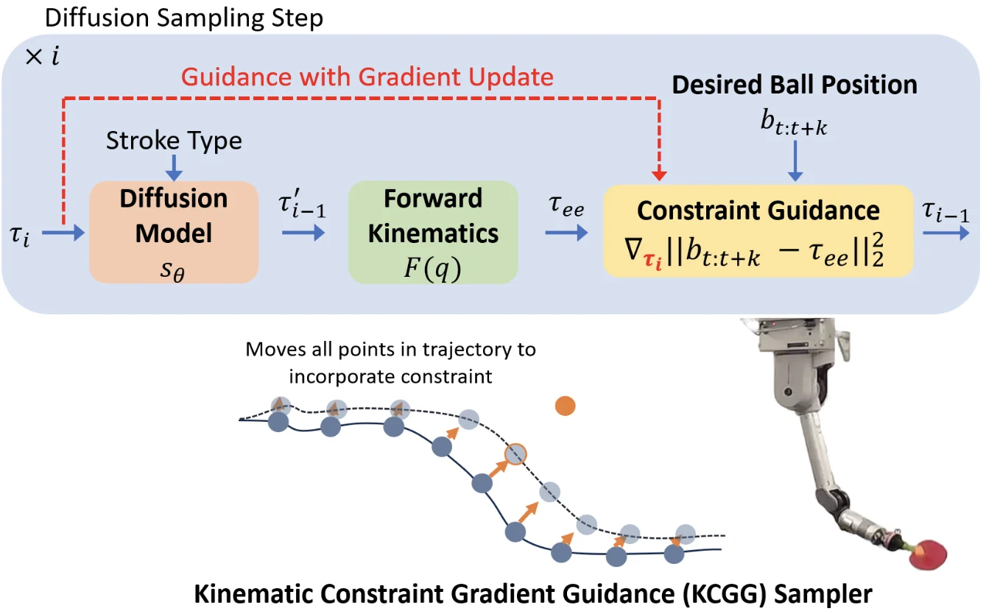
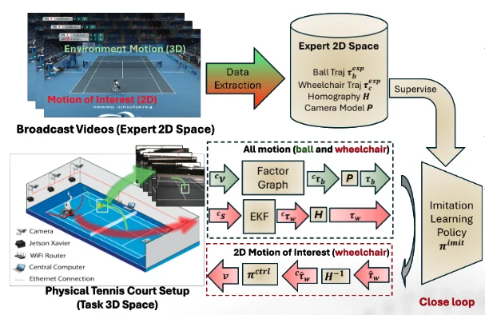
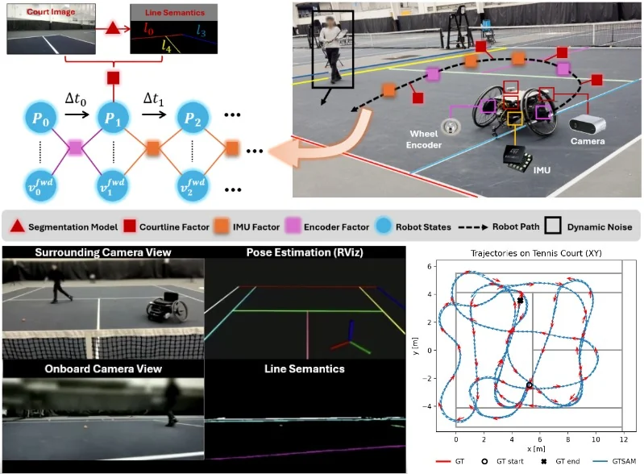
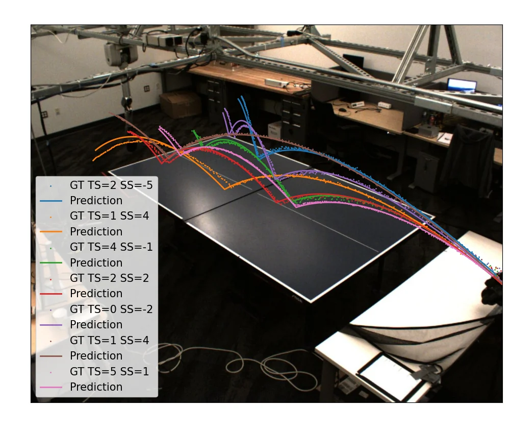

Current research · Esther tennisOngoing
Egocentric perception to robot action
Exploring a single factor-graph formulation that connects real-world egocentric perceptions with robot actions for tennis interaction.
I am Qingyu Xiao, a Robotics PhD candidate at Georgia Tech advised by Prof. Matthew Gombolay.
The real world is full of uncertainty. Sensing errors affect predictions and decisions, while actions shape what a robot observes next. I seek to learn a joint probabilistic model of sensing, thinking, and acting so these processes can inform one another and account for uncertainty across the entire loop.
With Dr. Frank Dellaert, I explore the STAG (Sense, Think, Action Graph) model to connect perception, prediction, and action in agile, real-world settings.
A STAG-inspired sketch for my ongoing Esther tennis work: sensor cues and learned visual outputs become measurements; factors connect them across time to estimate state and reason about future actions.
Multi-camera landmarks and learned line segmentation turn visual input into usable measurements. Ball detections are one illustrative tennis input.
Measurement and dynamics factors connect observations and states across time, supporting estimation and prediction.
Future goals can shape optimized robot actions—for example, intercepting a ball while respecting motion limits.
My work spans three connected directions across separate projects. My current Esther tennis research explores joining real-world egocentric perceptions and robot actions in one factor graph.
Turning state and predictions into responsive behavior for agile robots.
Exploring a single factor-graph formulation that connects real-world egocentric perceptions with robot actions for tennis interaction.

Contributed to diffusion-based striking motions with kinematic constraint guidance for agile robot behavior.

Contributed to diffusion-based navigation learned from broadcast videos with domain-knowledge transfer.
Extracting reliable state from fast, incomplete, multi-sensor observations.

Asynchronous robot pose estimation from visual line landmarks using probabilistic factor graphs and incremental GTSAM inference. A C++17/ROS 2 pipeline runs at 160 FPS with approximately 10 cm localization error without LiDAR on tennis courts; ControlNet-based pseudo-data supports line-segmentation training.
Modeled cuboid distributions from camera and LiDAR observations, improving recall from approximately 50% to 90% while maintaining precision around 90%.
Built GPU-accelerated rebar-intersection detection and added rebar landmarks to visual–inertial SLAM with GTSAM factor graphs.
Combining geometric inference with models of how the physical world evolves.

Jointly learned a factor-graph estimator and neural predictor from camera observations, using roto-translational invariant representations for flight and bounce dynamics.
Fused camera observations and human-pose-derived spin priors in a factor graph, reducing landing-position prediction error by 63.6% versus an adaptive EKF baseline.
Learnable factor-graph cuboid detection for autonomous driving.
Real-time rebar perception and landmark-aided robot localization.